Documentazione ufficiale delle presenze, entità e creature che infestano le notti di Milano e le dimensioni occulte di Strega Dony e il Berserker.
Dorme ubriaco parlando come se ascoltasse il motore dell'apocalisse da sotto i tombini. Nel delirio lascia indizi utili e materiali sporchi ma preziosi.
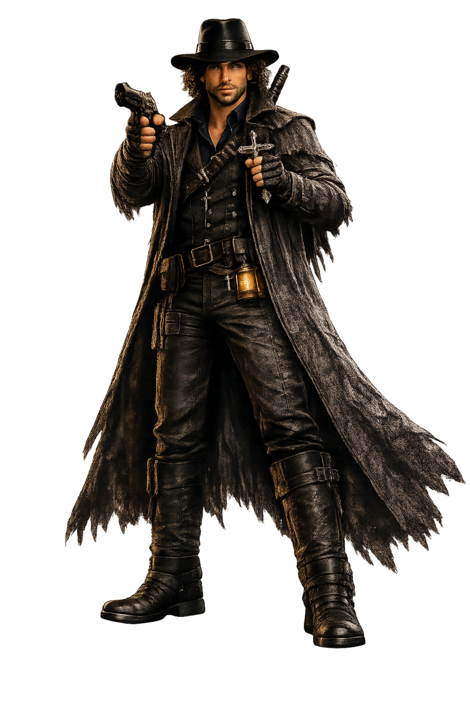
Cacciatore di vampiri e licantropi. Segue Dony e Berserker da lontano e affida a loro il fronte contro il Male che lui non puo' chiudere da solo.
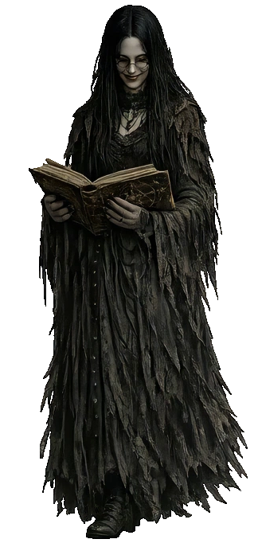
L'altra bibliotecaria della Libreria Esoterica. Presidia il reparto piu' sottile e inquieto, tra ricette rare e manuali su creature non morte.
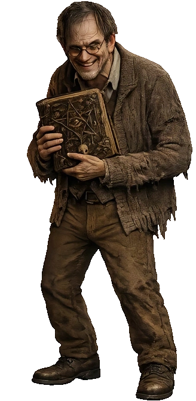
Uno dei due bibliotecari della Libreria Esoterica. Tiene in ordine i volumi piu' pericolosi e vende formule a chi dimostra di saperle maneggiare.
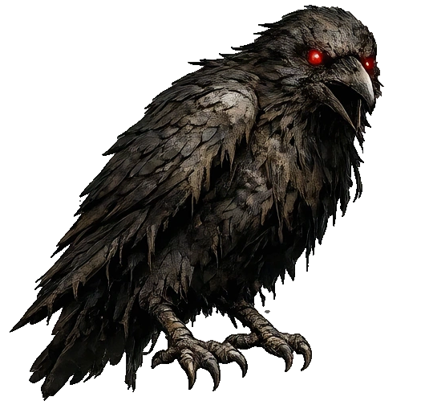
Corvo corrotto da energie necrotiche. Piomba rapido, sporca la scena di piume e sangue e resta utile a chi sa raccoglierne i resti.
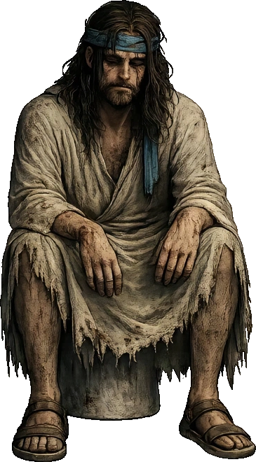
Figura messianica che appare nella Libreria Esoterica quando la storia accelera. Parla per simboli, lascia avvertimenti sul Golgotiano e affida al party un rotolo e un'arma prima di sparire nel caos.
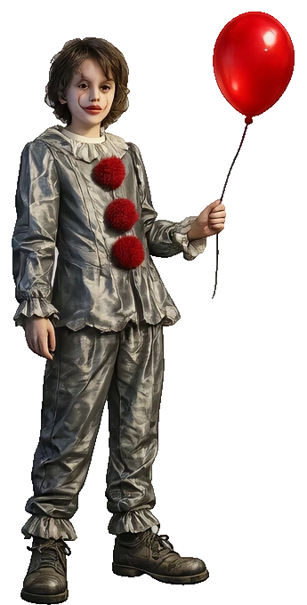
Superstite sconvolto che implora aiuto per i bambini scomparsi. Dal suo racconto parte una pista precisa verso la chiesa del Diavolo di Milano.
Occultista di strada con piu' disciplina che posa. Se servono manuali di magia nera, incantesimi, pozioni o sigilli, indica la Libreria Esoterica come unico posto che valga il rischio.
Guardiano della cripta. Le sue indicazioni sbloccano il percorso verso i sigilli più profondi.
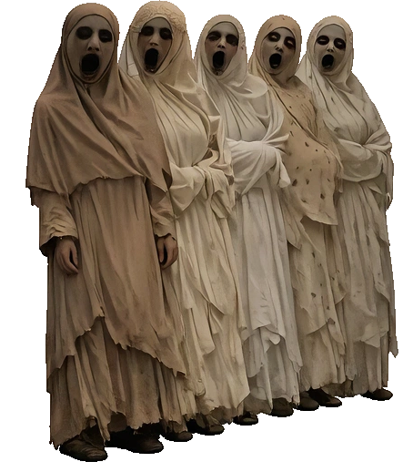
Ragazze sopravvissute solo a meta' all'incontro col mostro bianco. Tremano, cantano e lasciano indizi frammentati su cio' che si nasconde nel buio sotto di loro.
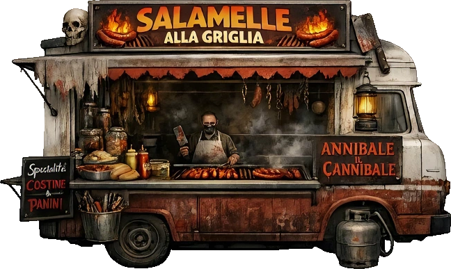
Cuoco ambiguo e inquietante, ossessionato dalla carne giusta e dall'aiuto cuoca scomparsa. Dietro i suoi discorsi culinari si intravede qualcosa di molto peggio di un ristorante malato.
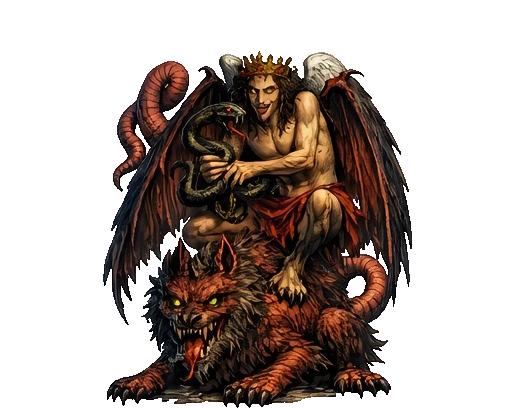
Entita' maggiore evocata in forma corporea. Resiste piu' del Tricheco sia sul piano fisico sia su quello mentale.
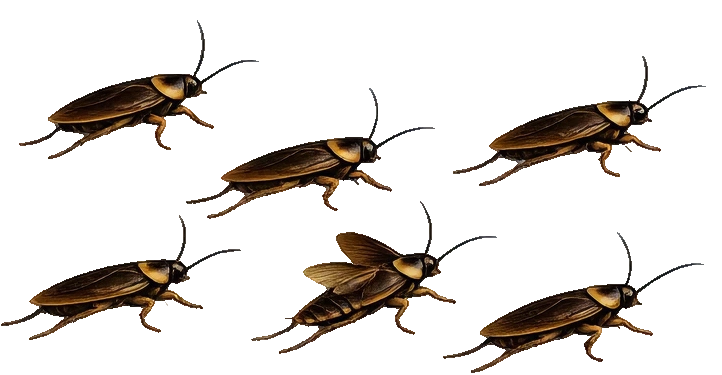
Variante più debole dei RageRats, numerosa e fastidiosa.
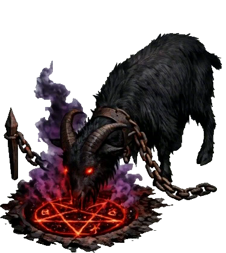
Creatura rituale aggressiva, meno devastante di Saragatanas ma abbastanza feroce da segnare lo scontro. Non e' necessaria per procedere, pero' l'esito dell'incontro resta registrato.
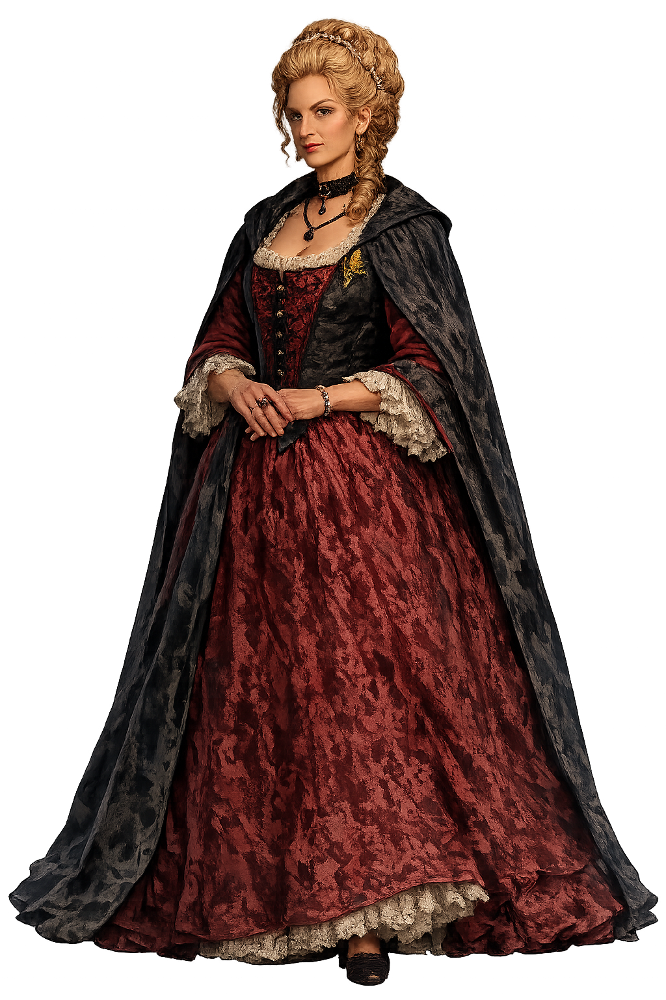
Cliente: Contessa Anna Pannocchia della Nobile Famiglia Pannocchia.
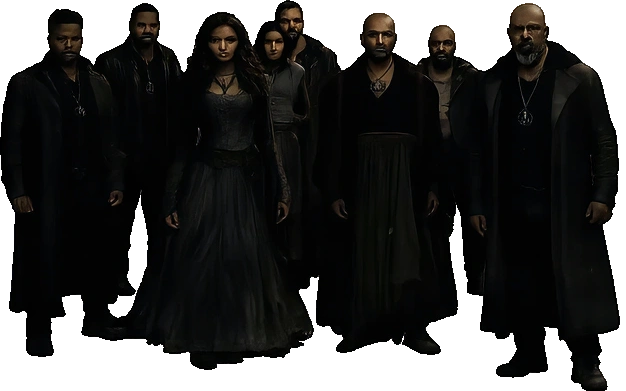
Custodi disperati di un villaggio ai confini della Via dell'Anello delle Streghe. Chiedono aiuto per chiudere un portale aperto sugli inferi prima che l'anticristo metta piede sulla terra.
[Dati non presenti nel Codex]
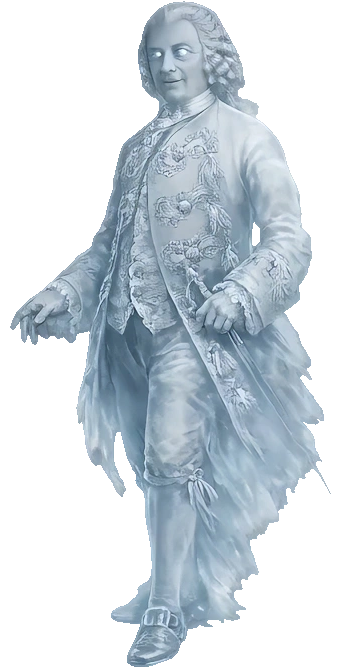
Fantasma del Conte Aliprandi.
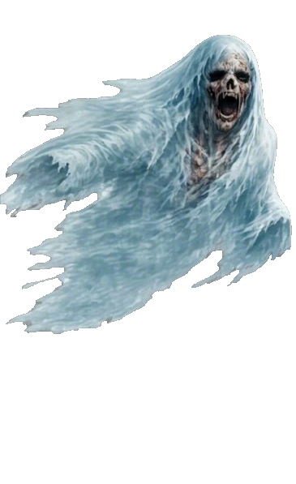
Spettro errante che pattuglia un corridoio corto oscillando lateralmente.
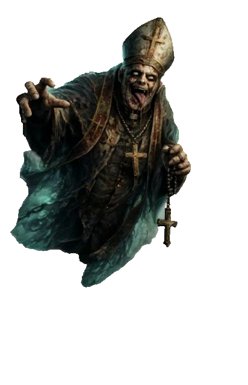
Versione sacrilega e spettrale del prete maiale, evocata dopo la profanazione dell'acqua santa. Carica contro il party con furia rancorosa e lascia dietro di se' residui ectoplasmatici.
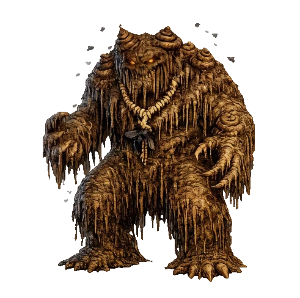
Custode empio schermato da un'aura speciale. Senza l'essenza giusta, il suo corpo assorbe gli assalti come fossero niente.
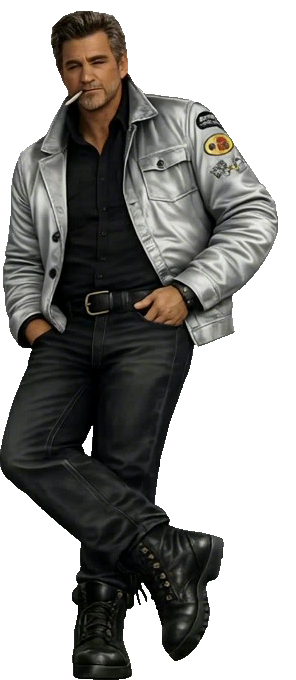
Duro del Parco delle Ombre. Fa da muro davanti al cimitero e ripete a chiunque di lasciar perdere prima di finire tra zombie e scheletri.
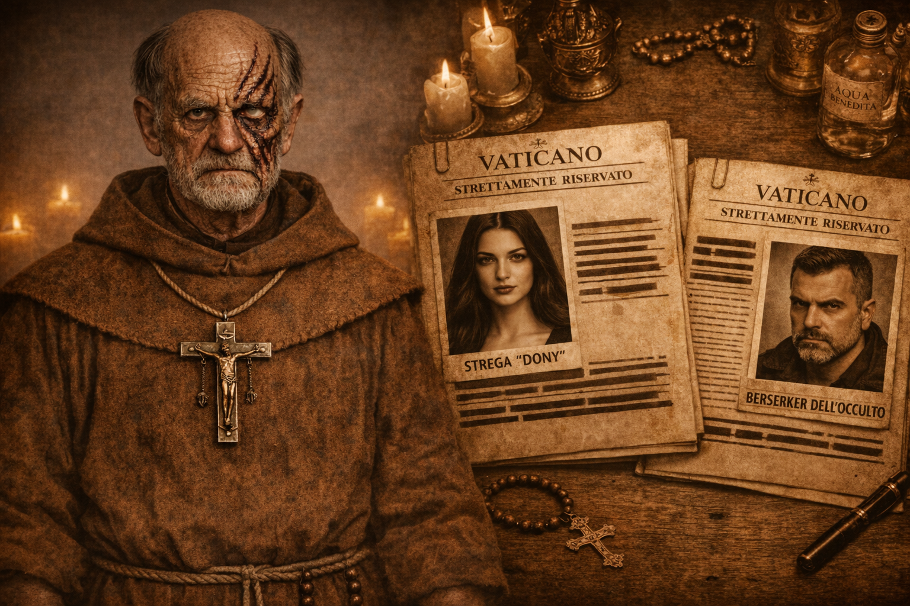
[Dati non presenti nel Codex]
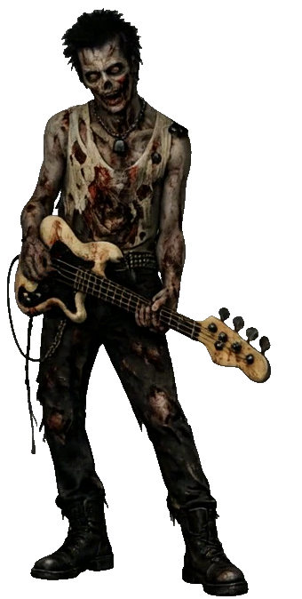
Ex rockstar punk ora zombie errante con la sua chitarra. Sopravvive scavando per vermi e lombrichi, ma i piu' succulenti gli fanno ancora paura.
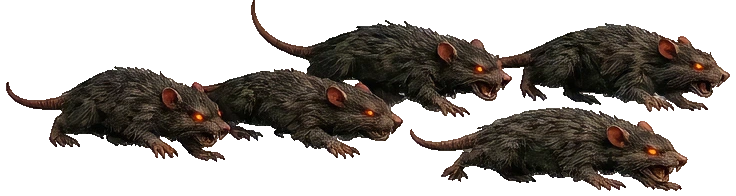
Sciami aggressivi. Pressione costante in corridoi e zone di transizione.
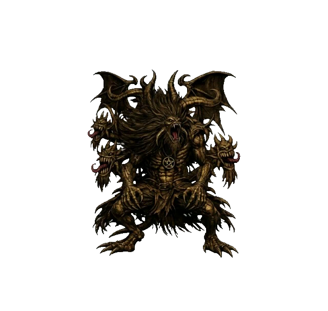
Entità dominante dell'antro. Altissima pressione mentale e danno elevato.
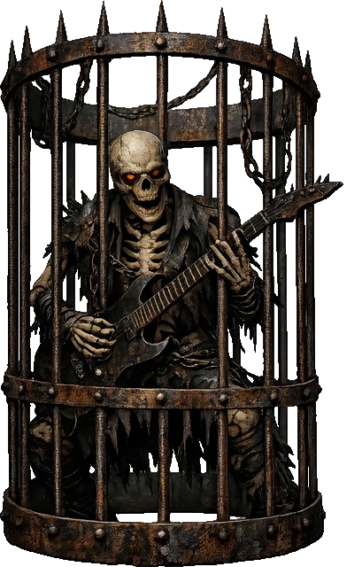
Scheletro intrappolato e deformato, abbastanza carico di residui spettrali da lasciare una reliquia utile dopo lo scontro.
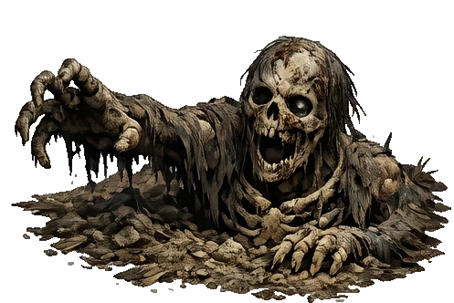
Scheletro risvegliato tra le tombe del cimitero. Si desta dal terreno e punta i vivi con movimenti secchi e ostinati.
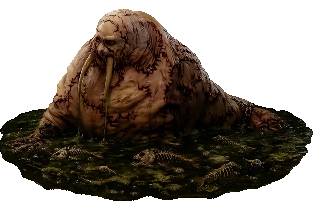
Mostruosita' rituale unica del livello, mostrata a terra o in acqua solo per esigenze sceniche e d'animazione. In qualunque forma appaia, resta lo stesso essere resistente e rancido.
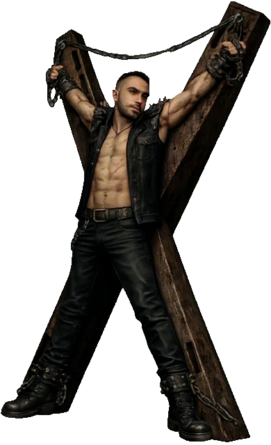
Prigioniero dell'antro. Conosce Saragatanas e guida il party nella fase finale.
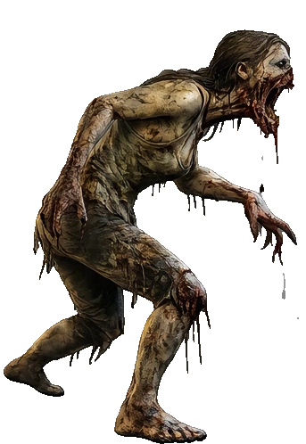
Serva rianimata della cucina mortuaria. Avanza con passo marcio e aggressivo, ma senza lasciare un bottino dedicato. (Aiuto Cuoca Zombie)